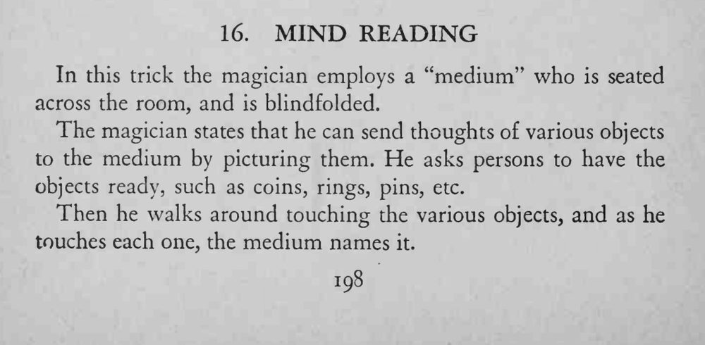
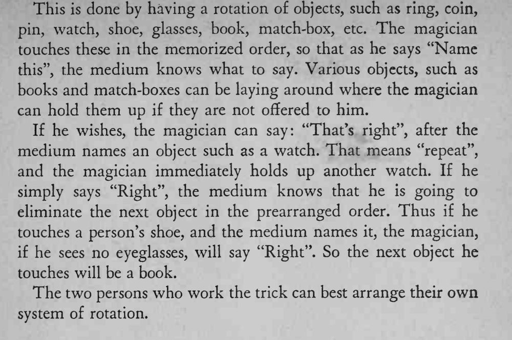

助手蒙眼坐在房间另一头，魔术师逐一触碰桌上的小物件，助手便逐件说出他碰的是什么。
暗号要在表演前练熟，两人要能自然地用一句话调整顺序。


In this trick the magician employs a "medium" who is seated across the room, and is blindfolded. The magician states that he can send thoughts of various objects to the medium by picturing them. He asks persons to have the objects ready, such as coins, rings, pins, etc. Then he walks around touching the various objects, and as he touches each one, the medium names it. pin, watch, shoe, glasses, book, match-box, etc. The magician touches these in the memorized order, so that as he says "Name this", the medium knows what to say. Various objects, such as books and match-boxes can be laying around where the magician can hold them up if they are not offered to him. If he wishes, the magician can say: "That's right", after the medium names an object such as a watch. That means "repeat", and the magician immediately holds up another watch. If he simply says "Right", the medium knows that he is going to eliminate the next object in the prearranged order. Thus if he touches a person's shoe, and the medium names it, the magician, if he sees no eyeglasses, will say "Right". So the next object he touches will be a book. The two persons who work the trick can best arrange their own system of rotation.